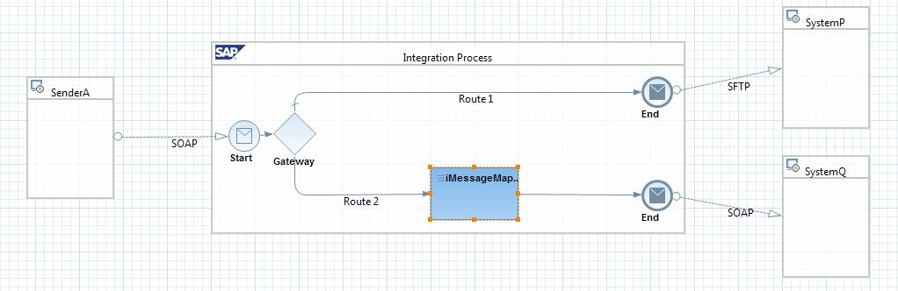

Configuring an Integration Flow
Context
You perform this task to configure an integration flow to represent a specific scenario.
You configure the integration flow by adding elements to the graphical model and assigning values to the elements relevant to the scenario. The basic integration flow requires you to configure the sender and receiver channels to enable a point-to-point process flow from the sender to a receiver.
The figure below helps you understand how a scenario is configured using an integration flow and is followed by an explanation:

The scenario involves communication of System A with System P and System Q, where System A sends messages to System P and System Q.
System A and System P have different communication
protocols, whereas, System Q requires additional field information in the message
format sent by System A. In such a case, you do the following configurations in the
integration flow:
After configuration, the resulting integration flow should be similar to
the example shown below:- Create an integration flow with a router branching out to two receivers.
- Configure conditions to route messages to the correct receiver.
- Place a mapping component in the communication between System A and System Q
Note You can use an Error
End event to throw the exception to default exception handlers in
integration process.